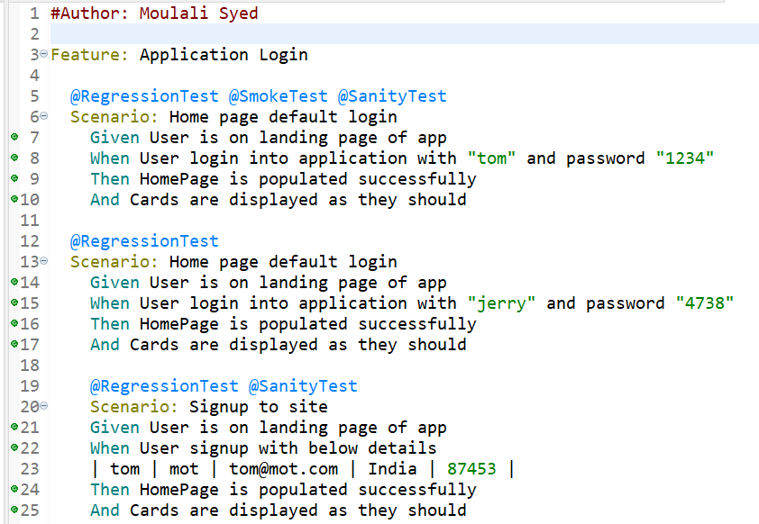
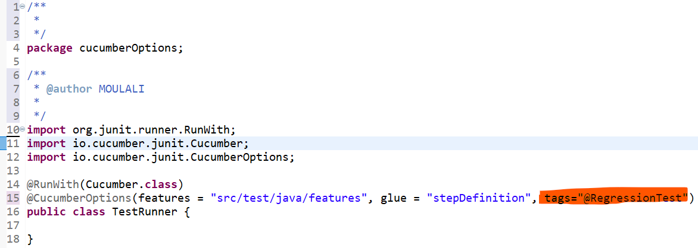

We have multiple .feature files in our project and we can tag and run testcases based on release or client requirement then we use tags in our feature file like @RegressionTest @SmokeTest @SanityTest
Then in TestRunner class use the tags option in CucumberOptions and run the testcases
If we want to skip a particular tagged Scenario , like SanityTest we can use tags="not @SanityTest"
If we want to run testcases tagged with SanityTest and RegressionTest use tags="@SanityTest and @RegressionTest"